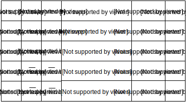

The most common operations in digital signal processing are addition, subtraction, multiplication, division and square root. From those operations, the square root is the most difficult to be implemented in hardware because of its complexity.
Let N be a number with n bits as can be seen in equation (1) and let X be the square root of N according to equation (2):
equation (1) equation (2){kind=link}
{kind=link}
Note that N may be expanded as can be seen in equation (3):
equation (3){kind=link}
From equation (3) is possible to estimate the square root of N one bit at a time according to the following algorithm: starting from the most significant bit an, each estimated bit of the square root is removed from R and added to a variable P, where P is defined in the equation (4).
equation (4){kind=link}
So, if the m-1 bits a1, a2, ... ,am-1 have already been estimated, each guess of the square root should satisfy the recursion of the equation (5)
equation (5){kind=link}
When Xn=0 the exact square root of N have been found so far; otherwise, the sum of the ai gives an approximation of the square root of N.
The flowchart of the square root algorithm can be seen in Figure (1).
Figure (1): Square root algorithm{kind=link}
Learning from an example
As an example to illustrate how the square root algorithm works, let N=9. Since N is represented with 4 bits, the computation of the square root will be taken in 4 iterations.
 example{kind=link}
If N is not a perfect square number, adding bits to its representation increases the precision of the square root result. For example, for N=6, adding 10 bits of precision to N is equivalent to make N = 6 < < 10 = 6144 and the algorithm will return 78 as the result for sqrt(6144) and once 6 was shifted 10 bits to the left, shifting 5 bits to the right makes the value of the square root be 78/32 = 2.4375 that is the approximate value of sqrt(6).
You want to try by yourself? Check out the SystemVerilog implementation of square root module and its testbench:
module sqrt #(parameter NBITS = 8, PRECISION = 10) (input logic [NBITS-1:0] A, input logic clock, reset, oReady, iValid, output logic iReady, oValid, output logic [NBITS-1:0]result); enum logic [1:0] {INIT, SET, CALC, SEND} state; logic [NBITS+NBITS-1:0] A_aux, Y, P; logic [4:0] m; always_ff @(posedge clock)begin if(reset)begin A_aux <= '0; result <= '0; m <= NBITS-1; state <= INIT; iReady <= 0; oValid <= 0; end else begin case(state) INIT: begin iReady <= 1; oValid <= 0; A_aux <= A<<<PRECISION; Y <= '0; P <= '0; m <= NBITS-1; state <= SET; end SET: begin if(m < NBITS)begin Y <= ((P<<<(m+1)) + (1 <<< (m+m))); state <= CALC; end else begin oValid <= 1; state <= SEND; end end CALC: begin if(Y < A_aux || Y == A_aux)begin A_aux <= A_aux - Y; P <= P + (1 <<< m); result[m] <= 1; end else result[m] <= 0; m <= m-1; state <= SET; end SEND: begin if(oReady)begin result <= result >>>(PRECISION-1); oValid <= 0; state <= INIT; end end endcase end end endmodule
`include "sqrt.sv" parameter NBITS = 8, HALF_PRECISION = 5; module top; logic clock, reset; logic [NBITS-1:0] A; logic [NBITS-1:0]result; logic iReady, iValid, oReady, oValid; enum logic {S1, S2} state; initial begin clock = 0; reset = 1; #20 reset = 0; end always #5 clock = !clock; sqrt #(NBITS) SQRT(.*); always_ff @(posedge clock)begin if(reset)begin iValid <= 0; oReady <= 0; state <= S1; end else case(state) S1: begin A = 20'd6; iValid <= 1; oReady <= 1; if(iReady) state <= S2; end S2: begin if(oValid)begin $display("sqrt(%1d) = %d/(1<<%1d)", A, result, HALF_PRECISION); $finish(); end end endcase end endmodule
Also available in GitHub.
References: Methods of computing square roots - Wikipedia